Dans cette vidéo, je vais vous montrer une stratégie de scalping d'une minute que les débutants et les traders avancés utilisent pour gagner rapidement des centaines, voire des milliers de dollars sur Bitunix et LBank. Nous parlons de plusieurs trades par jour avec des entrées et des sorties rapides. Cette méthode de scalping est parfaite si vous voulez capturer des mouvements de prix rapides tout au long de la journée au lieu d'attendre des heures qu'un setup apparaisse enfin. Je vais vous l'expliquer étape par étape et vous montrer les indicateurs exacts et les paramètres que j'utilise personnellement. Assurez-vous donc de regarder jusqu'à la fin. Très bien, les gars, étape numéro une, inscrivez-vous sur un échange. Pour cette stratégie, nous allons utiliser Bitunix.
Interface & Outils : Interface de la plateforme d'échange Bitunix et graphique TradingView.
Contenu textuel & Code : Graphique de prix BTCUSDT, carnet d'ordres (Orderbook), indicateur LinReg Candles, UT Bot Alerts et volumes de trading en bas de page.
Action / Démonstration : Présentation de l'interface de trading Bitunix et démonstration d'une stratégie de scalping d'une minute sur graphique TradingView avec des signaux d'achat et de vente.
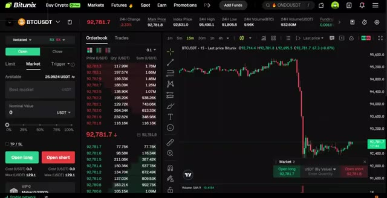
🔍 Agrandir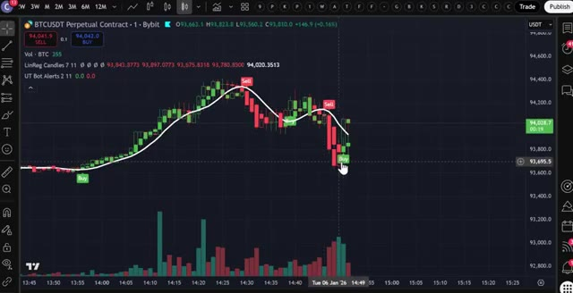
🔍 AgrandirC'est l'une des principales bourses que j'utilise en ce moment pour le trading de produits dérivés, et ils proposent des bonus absolument fous en ce moment. Vous pouvez obtenir jusqu'à 20 USDT rien que pour votre premier dépôt, plus 20 USDT supplémentaires pour avoir effectué votre premier trade sur les contrats à terme. Si Bitunix n'est pas disponible dans votre pays ou si vous ne voulez pas faire de KYC, vous pouvez utiliser LBank comme alternative. Et le meilleur dans tout ça ? LBank ne requiert pas de vérification KYC pour le trading de base. LBank propose également 50 000 USDT de bonus exclusifs. Je mettrai les liens des deux ci-dessous, mais pour cette vidéo, nous allons utiliser Bitunix.
Interface & Outils : Interface de la plateforme d'échange Bitunix et site web d'information Crypto Vanguards.
Contenu textuel & Code : Offre promotionnelle de bonus "First-Time Deposit" offrant jusqu'à 20 USDT en boîte mystère pour un dépôt minimum de 100 USDT.
Action / Démonstration : Navigation sur la page des promotions et des bonus d'inscription de la plateforme d'échange.
Pour vous inscrire sur Batunix et réclamer vos bonus, cliquez sur le lien tout en haut de la description. Vous serez redirigé vers la page d'inscription où il vous suffit d'entrer votre e-mail, de créer un mot de passe fort et de créer un compte. La deuxième étape consiste à déposer des fonds. Laissez-moi vous montrer comment déposer des fonds avant que nous ne plongeions dans la stratégie. Une fois connecté à Bitunix, allez dans le coin supérieur droit, cliquez sur l'icône du portefeuille, puis cliquez sur dépôt. Choisissez la pièce que vous souhaitez déposer. Je recommande l'USDT et sélectionnez le réseau de blockchain correct. Assurez-vous de choisir le bon réseau pour éviter de perdre
Interface & Outils : Site web de la plateforme d'échange de cryptomonnaies Bitunix.
Contenu textuel & Code : Formulaire d'inscription, bannières promotionnelles (« Ultra 4ward Begins! ») et menu de sélection de cryptomonnaies pour le dépôt.
Action / Démonstration : Démonstration du processus d'inscription et de dépôt de fonds sur Bitunix.
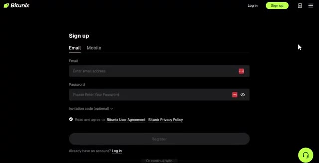
🔍 Agrandir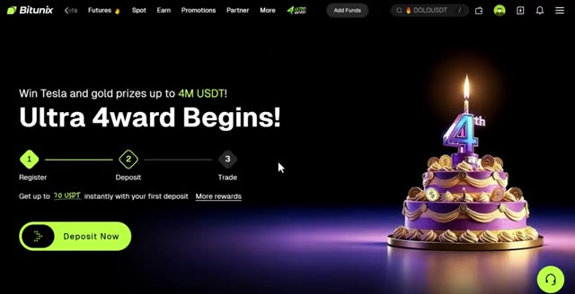
🔍 Agrandir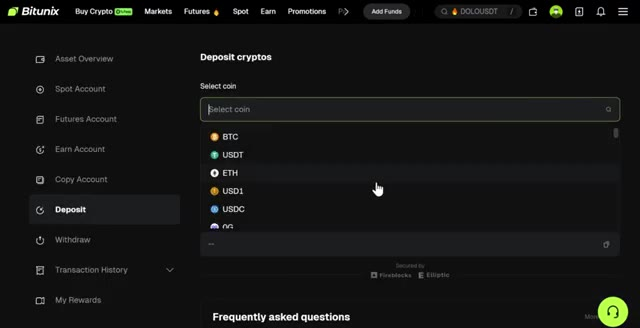
🔍 Agrandirvos fonds. Confirmez les détails, puis scannez le code QR ou copiez l'adresse de dépôt pour transférer vos fonds depuis votre portefeuille ou un autre échange. Si vous souhaitez déposer en monnaie fiat, cliquez sur Acheter des cryptos en haut du menu, puis sélectionnez Achat en un clic. Choisissez votre devise, entrez le montant, et après cela sélectionnez votre mode de paiement. Une fois vos fonds déposés, il est temps d'ouvrir une position. L'étape numéro trois consiste à ouvrir votre première position. Cliquez sur Futures dans le menu supérieur, puis sélectionnez USDT-M Futures. Cela vous amènera à l'interface de trading. Choisissez l'actif que vous voulez
Interface & Outils : Interface web de l'échange de cryptomonnaies Bitunix.
Contenu textuel & Code : Solde du portefeuille de 26.76 USDT, options de dépôt, de retrait et méthodes de paiement par fiat avec différents taux de change.
Action / Démonstration : Navigation dans le tableau de bord utilisateur de la plateforme d'échange et sélection des méthodes de paiement pour le dépôt en monnaie fiduciaire.
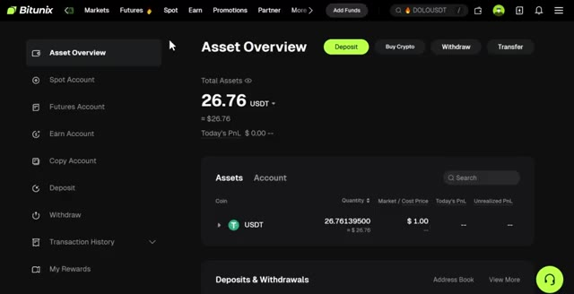
🔍 Agrandir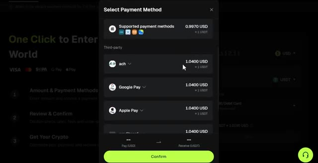
🔍 Agrandir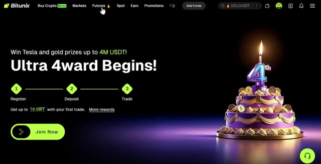
🔍 Agrandirpour placer votre transaction dans le coin supérieur gauche. Pour cet exemple, j'utiliserai BTCUSDT, mais vous pouvez trader n'importe quel altcoin ici si vous le souhaitez. Sélectionnez votre type d'ordre, limite ou au marché. Je recommande de commencer par des ordres au marché pour une exécution instantanée. Entrez les détails de votre transaction tels que la quantité et le prix. Ensuite, choisissez votre type de levier. Vous pouvez utiliser la marge croisée ou la marge isolée. Personnellement, j'utilise la marge isolée car elle limite votre risque uniquement à cette position spécifique. Vous pouvez utiliser jusqu'à 200 fois de levier sur Bitunix, mais il est important de ne pas utiliser un effet de levier élevé car c'est très risqué. Pour les débutants,
Interface & Outils : Interface de la plateforme d'échange Bitunix (trading de futures crypto).
Contenu textuel & Code : Graphique de prix BTCUSDT en unités de 15 minutes, carnet d'ordres en temps réel, sélecteur de type d'ordre (Limit/Market) et options de mode de marge (Cross/Isolated).
Action / Démonstration : Sélection du type d'ordre au marché et configuration du mode de marge isolé pour la paire BTCUSDT.
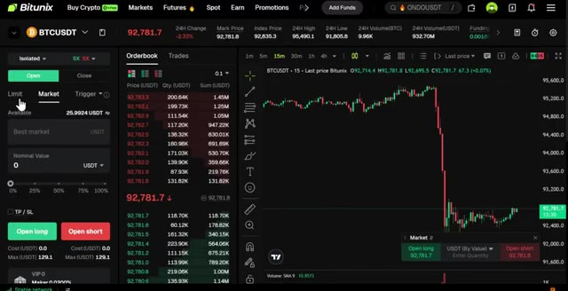
🔍 Agrandir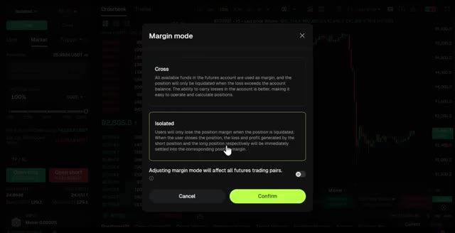
🔍 AgrandirJe recommande de commencer par un levier de 5 à 10 fois maximum jusqu'à ce que vous soyez à l'aise. Si vous êtes très avancé, vous pourriez aller jusqu'à peut-être 25 fois. Confirmez les détails de votre ordre, puis cliquez sur ouvrir long si vous pensez que le prix va monter, ou short si vous vous attendez à ce que le prix baisse. Pour cet exemple, je vais cliquer sur long. Une fois votre ordre exécuté, vous pouvez le voir sous l'onglet des positions en bas de l'écran. Maintenant que vous savez comment utiliser les produits dérivés sur Bitunix, passons à la stratégie réelle qui peut vous faire gagner des centaines de dollars par jour. Très bien, il s'agit donc d'une stratégie de scalping et c'est une stratégie de trading à court terme que les traders peuvent utiliser pour réaliser des profits fréquents grâce à
Interface & Outils : Interface de trading crypto (type plateforme d'échange de contrats futures) avec graphique des prix et carnet d'ordres intégré.
Contenu textuel & Code : Réglage du levier à 5X, paire BTCUSDT, carnet d'ordres en temps réel, et confirmation d'ordre exécuté ("Order placed" / "Open Long 5X").
Action / Démonstration : Ajustement du levier à 5x puis passage et confirmation d'un ordre d'achat au marché (Open Long).
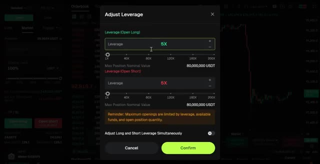
🔍 Agrandir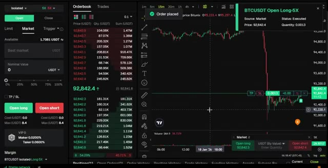
🔍 Agrandirpetits mouvements de prix au quotidien. Donc nous entrons et sortons rapidement au lieu de faire du swing trading à plus long terme. Passons maintenant directement à la configuration de la stratégie. D'abord, vous devez obtenir un compte Trade Viewer. Le lien sera en bas pour Trade and View. C'est une version gratuite, donc c'est tout à fait bien de l'utiliser sans payer pour la version pro. Sélectionnez maintenant la paire de trading ici. Dans ce cas, je vais choisir BTC contre USDT. La prochaine chose à faire est de sélectionner l'unité de temps juste ici. Comme il s'agit d'une stratégie de scalping d'une minute, je recommande la minute.
Interface & Outils : TradingView
Contenu textuel & Code : Graphique en chandeliers japonais, graphiques de volume, sélection d'actifs (BTCUSDT, MEXC, Bybit, OKX, etc.)
Action / Démonstration : Navigation et sélection d'un symbole sur la plateforme de graphiques TradingView pour la configuration de la stratégie.
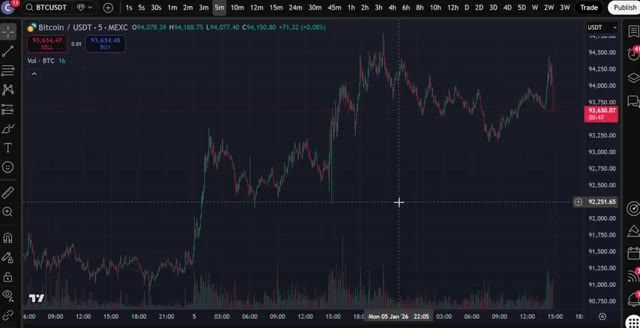
🔍 Agrandir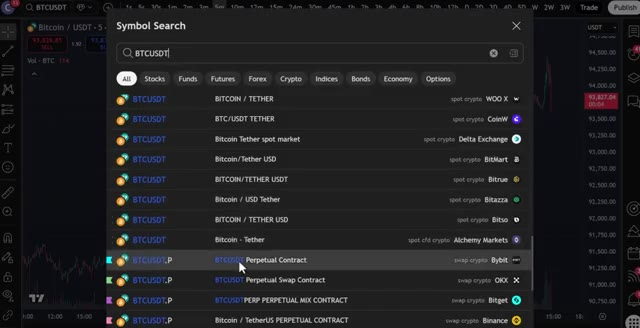
🔍 Agrandirpériode de temps pour obtenir les meilleurs résultats. Allez maintenant dans l'onglet des indicateurs, tapez bougies de régression linéaire et sélectionnez celui-ci ici. Ajoutez-le au graphique et ouvrez les paramètres de l'indicateur en cliquant juste ici. Dans la section des entrées, ajustez le lissage du signal à 7. Cliquez sur le style et augmentez l'épaisseur de la ligne de tracé pour une meilleure visibilité. Encore une fois, retournez dans l'onglet des indicateurs. Recherchez alertes UT bot et sélectionnez celui-ci. Allez dans les paramètres et cliquez ici dans l'onglet des entrées. Changez la valeur clé à 2 et changez l'ATR à 11 et cliquez sur OK. Cet indicateur sera votre confirmation d'entrée. Quand
Interface & Outils : TradingView / Bybit (Graphique de trading en ligne)
Contenu textuel & Code : Paire BTCUSDT Perpetual Contract, bougies japonaises et indicateur technique "LinReg Candles 11 11" affiché avec sa courbe de régression linéaire blanche.
Action / Démonstration : Sélection et survol des options de l'indicateur Linear Regression Candles sur le graphique pour préparer la modification des paramètres.
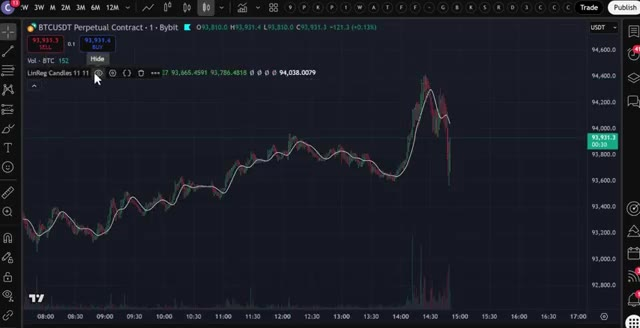
🔍 Agrandiril donne un signal d'achat, vous ouvrez une position acheteuse. Quand il donne un signal de vente, vous ouvrez une position vendeuse. Pour le dernier indicateur, allez dans l'onglet des indicateurs, tapez STC, et choisissez celui-ci ici. Cet indicateur vous aidera à éviter les faux signaux. Vous entrerez uniquement dans un trade acheteur lorsque la ligne devient verte et dans un trade vendeur lorsqu'elle devient rouge. Maintenant, pour avoir les conditions d'ouverture d'un trade, d'abord pour une position acheteuse, l'indicateur UTBOT alerts doit afficher un signal d'achat. Vous avez besoin d'une bougie de régression linéaire verte qui clôture au-dessus de la ligne blanche. L'indicateur STC doit être de couleur verte. Une fois que ces conditions sont réunies,
Interface & Outils : TradingView
Contenu textuel & Code : Barre de recherche avec le texte 'stc' et liste des indicateurs correspondants (STC Indicator - A Better MACD, STC Price Action Zone, etc.).
Action / Démonstration : Recherche et sélection de l'indicateur STC pour filtrer les faux signaux.
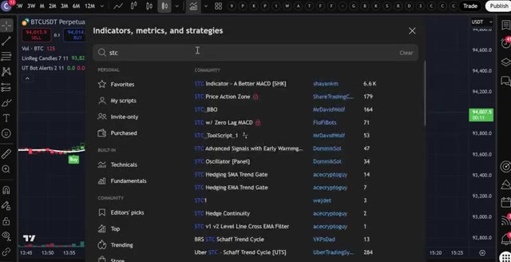
🔍 Agrandirvous y allez et vous entrez dans une position longue. Et n'oubliez pas, si vous utilisez mon lien sous cette vidéo vers Bitunix, vous pouvez réellement obtenir jusqu'à 40 USDT de bonus juste pour avoir déposé et complété votre premier trade, mais seulement avec mon lien. Une chose cruciale dans n'importe quel trade est de placer un stop loss. Pour cela, vous pouvez placer un stop loss en dessous de la ligne blanche, mais vous attendrez qu'une bougie de régression linéaire clôture en rouge, et c'est à ce moment-là que vous sortez de votre position.
Interface & Outils : Bitunix (échange crypto) et TradingView (graphique financier).
Contenu textuel & Code : Offre promotionnelle de 20 à 40 USDT de bonus sur dépôt, graphique en chandeliers BTCUSDT, signaux d'achat/vente et indicateur de momentum/oscillateur en bas de page.
Action / Démonstration : Présentation de l'offre de parrainage/bonus d'échange suivie d'une analyse technique illustrant l'ouverture d'une position longue sur le Bitcoin.
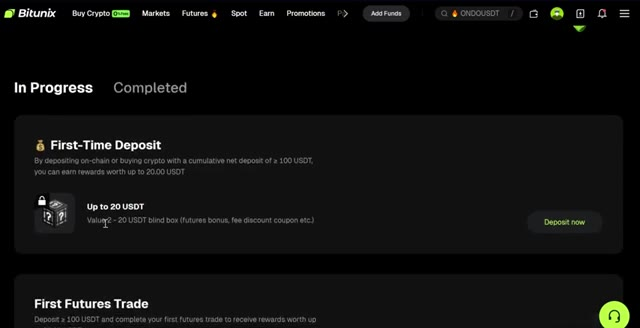
🔍 Agrandir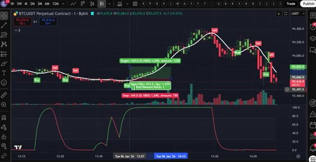
🔍 AgrandirDans ce cas, vous clôtureriez votre position juste ici. Dans cet exemple, vous pouvez voir que la bougie de régression linéaire est verte et a également clôturé au-dessus de la ligne blanche. Vous pouvez également voir que les alertes UTBOT ont émis un signal d'achat ici, et que la ligne de l'indicateur STC est verte. Pour avoir les conditions nécessaires afin d'entrer dans une position courte, vous ferez l'exact opposé d'une position longue.
Interface & Outils : TradingView
Contenu textuel & Code : Graphique BTCUSDT Perpetual Contract, bougies japonaises, indicateur de régression linéaire (ligne blanche), signaux d'achat/vente (UTBOT), indicateur de volume et indicateur de momentum dans le panneau inférieur.
Action / Démonstration : Analyse d'un signal d'achat et démonstration de la clôture d'une position de trading.
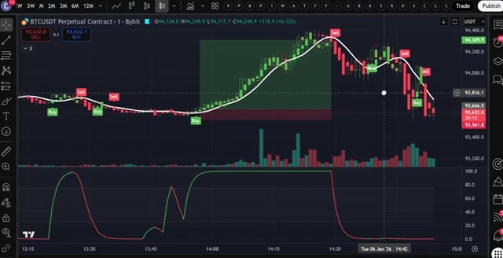
🔍 AgrandirPour une position vendeuse, vous devez voir une bougie de régression linéaire rouge clôturer en dessous de la ligne blanche. Vous avez besoin que les alertes UTBOT montrent un signal de vente. L'indicateur STC doit être rouge. Vous pouvez voir que toutes ces conditions ont été remplies ici, vous pouvez donc entrer en position vendeuse. Vous placerez un stop loss ici, juste au dessus de la ligne blanche, et laisserez votre trade courir jusqu'à ce que vous voyiez un signal opposé, qui sera votre sortie.
Interface & Outils : TradingView / Bybit (BTCUSDT Perpetual Contract)
Contenu textuel & Code : Bougies de prix, ligne de régression linéaire blanche, signaux UTBOT (étiquettes "Sell" et "Buy"), indicateur de volume, et indicateur STC (Schaff Trend Cycle) en bas.
Action / Démonstration : Analyse graphique illustrant les conditions requises pour une position vendeuse (bougie rouge clôturant sous la ligne blanche, signal de vente UTBOT et indicateur STC rouge).
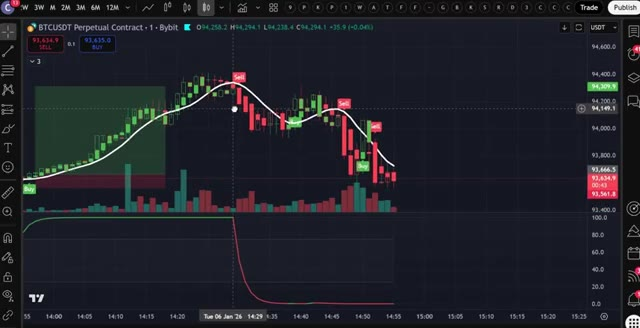
🔍 AgrandirEt c'est tout, les gars. C'est la stratégie complète de scalping d'une minute pour débutants. Si vous voulez commencer à utiliser cette stratégie dès maintenant, cliquez sur le lien tout en haut de la description pour vous inscrire sur Bitunix et réclamer vos bonus. Et n'oubliez pas, si Bitunix n'est pas disponible dans votre pays ou si vous préférez l'absence de KYC, LBank est votre alternative avec 50 000 USDT de bonus.
Interface & Outils : TradingView, interface d'échange Bitunix, site web Crypto Vanguards.
Contenu textuel & Code : Graphique de prix BTCUSDT avec indicateurs techniques, niveaux de take profit et stop loss, bonus de premier dépôt Bitunix, informations sur le KYC de LBank.
Action / Démonstration : Présentation d'une stratégie de scalping sur graphique, incitation à l'inscription sur une bourse crypto avec bonus et revue d'informations KYC.
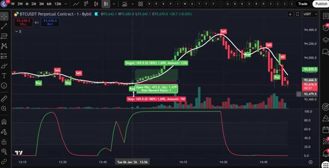
🔍 Agrandir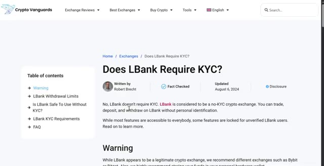
🔍 AgrandirEt si vous voulez plus de détails sur le fonctionnement des plateformes Bitunix et LBank, regardez la vidéo qui s'affiche à l'écran dès maintenant pour une visite guidée complète. Si vous avez apprécié cette vidéo, n'oubliez pas de laisser un pouce bleu et de vous abonner à ma chaîne pour plus de tutoriels de trading. Je vous vois dans la prochaine vidéo.
Interface & Outils : Interface TradingView.
Contenu textuel & Code : Paire BTCUSDT Perpetual Contract, indicateurs LinReg Candles et UT Bot Alerts, et histogramme de volume.
Action / Démonstration : Visualisation d'un graphique de trading avec des signaux techniques (Buy/Sell).
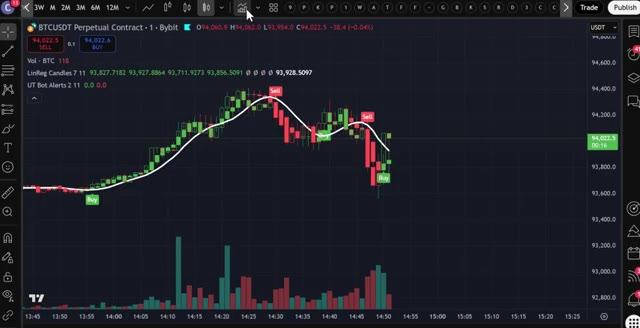
🔍 Agrandir